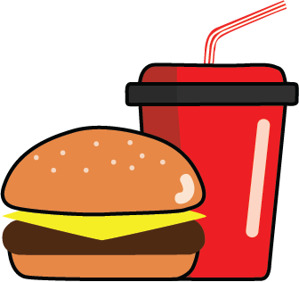
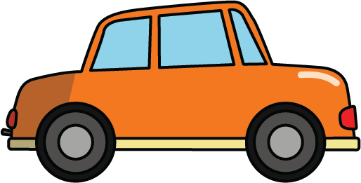

From how we consume culture in our daily lives, appropriate change can take place to mitigate personal impacts. Although small at the time, these tend to build up causing issues for our eco.
my impact
Other than the worldwide issues, a more personal reflection can offer significant outcomes to reduce impacts on our eco.
takeaways

Takeaway food offers convenience for many; however, it produces an extensive amount of waste leading to negative environmental impacts. With majority of this fast food coming in in the form of aluminium, polystyrene (Styrofoam) and polypropylene (clear plastic), there are various usages for these items all with a single-use intention. Not only is the disposal of these items an issue, but the manufacturing process produces significant impacts.
coffee cups
The daily ritual of coffee is another contributor which presents negative impacts on our eco. With 500 billion single-use coffee cups used and disposed worldwide every year, the rate of this consumption is troubling for the health of our natural environment. For each of these disposable cups, approximately 200 litres of water are used for manufacturing. Once broken down, the various micro plastics imbedded in the cup then become ingestible for animals, impacting the entire food chain.
transport

Another aspect which relates to personal impacts on our eco, is the transport sector. The process of getting from one place to another with ease has become at the forefront of consumer minds. However, well before a vehicle is able to go on the road, the manufacturing process generates considerable amounts of energy. Once road ready, about 80 to 90% of environmental impacts are due to fuel consumptions and emissions of air pollution and greenhouse gases which is then linking to global warming impacts.